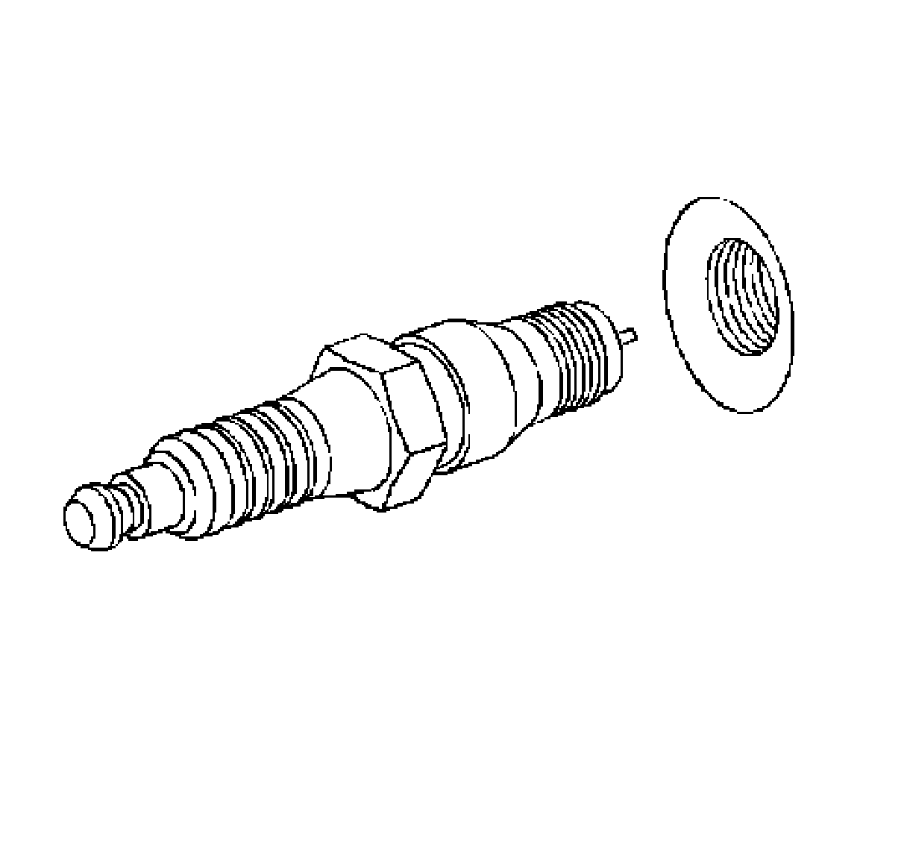

Valve Spring: Service and Repair
Valve Stem Oil Seal and Valve Spring Replacement
Tools Required
^ J 22794 Spark Plug Port Adapter
^ J 38606 Valve Spring Compressor
Removal Procedure
1. Remove the rocker arm. Refer to Valve Rocker Arm and Push Rod Replacement.
2. Disconnect the spark plug wire at the spark plug.
^ Twist each plug wire boot 1/2 turn.
^ Pull only on the boot in order to remove the wire from the spark plug.

Important: Remove the spark plugs from the cylinder head with the engine at room temperature.
3. Loosen the spark plug 1 or 2 turns.
4. Brush or air blast away any dirt or debris from around the spark plug.
5. Remove the spark plug.
6. Install the J 22794 into the spark plug hole.
7. Attach an air hose to the J 22794.
8. Apply compressed air to the J 22794 in order to hold the valves in place.
9. Use the J 38606 in order to compress the valve spring.

10. Remove the valve stem keys (225).
11. Carefully release the valve spring tension.
12. Remove the J 38606.
13. Remove the valve spring cap (224).
14. Remove the valve spring (223).
15. Remove the valve stem oil seal (222).
16. Remove the valve (228).
Installation Procedure
1. Clean the cylinder head valve spring seat area.
2. Lubricate the valve guide and valve stem oil seal with clean engine oil.
3. Install the valves (228) into the proper port.
4. Install the valve stem oil seal (222).
5. Install the valve spring (223).
6. Install the valve spring cap (224).
7. Compress the valve spring using the J 38606.
8. Install the valve keys.
^ Use grease in order to hold the valve keys in place.
^ Make sure the keys seat properly in the groove of the valve stem.
^ Carefully release the valve spring pressure, making sure the valve keys stay in place.
^ Remove the J 38606.
^ Tap the end of the valve stem with a plastic faced hammer to seat the keys, if necessary.
9. Remove the J 22794 from the spark plug port.
Notice: Refer to Fastener Notice.
10. Hand start the spark plug.
Tighten the spark plug to 15 N.m (11 lb ft).
11. Install the spark plug wires at the ignition coil.
12. Install the spark plug wire to the spark plug.
13. Inspect the wires for proper installation:
^ Push sideways on each boot in order to check for proper installation.
^ Reinstall any loose boot.
14. Install the rocker arm. Refer to Valve Rocker Arm and Push Rod Replacement.